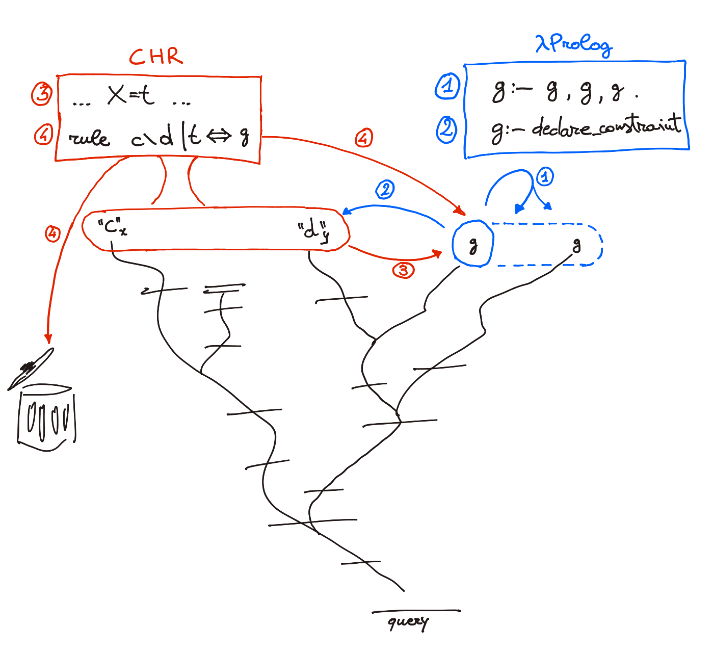

Elpi = λProlog + CHR
Elpi runs a query by building a proof tree, depth-first: a rule becomes a node whose branching factor is its number of premises. At any point one open branch is active, its tip the goal currently being worked on, and every other open branch is inert. Four actions drive the construction:
run: solve the active goal against the program. Pick a rule whose head unifies with it (Inference rules and queries) and continue with its first premise; when a branch closes, the next open goal in the depth-first walk becomes active;
suspend: instead of solving the active goal, turn it into a constraint kept in the constraint store, recording which variables should wake it up (Constraint handling rules). The branch pauses and the search moves to that same next open goal: in
p :- a, bwithasuspended,bis worked on next;resume: when one of those variables is assigned, by
runacting elsewhere in the tree, the constraint is turned back into an active goal and its branch continues;handle: after each of the above, a constraint handling rule may fire over all suspended branches at once. It can drop a constraint, pruning its branch for good, or add a fresh goal, starting a new one.
run, suspend and resume build an ordinary, if pausable, proof
tree, one branch at a time. handle is different in kind: it is a step
over the whole set of suspended branches, so it can do things no
single-branch step can, such as noticing that two suspended goals contradict
each other and replacing both with false, or merging two identical
branches into one (in effect building a DAG, not just a tree, of the proof
search).
{kind=link}

The four actions on an Elpi computation, run (1), suspend (2), resume (3) and handle (4), from the author’s HDR thesis.
This part of the manual follows that split. run is covered in
Logic Programming: Elpi as Prolog, and as λProlog with binders.
suspend and resume are covered in Constraints: why an
incomplete term needs them and what a constraint is. handle is covered in
The constraint store: the constraint store and constraint handling rules in detail. A
reference-level formalization of all four is given in Formal semantics.
A single goal exercises all four: it runs, suspends twice on an unknown Y,
has a constraint handling rule drop one of the duplicates, then resumes and
runs to completion once Y is filled in.
../code/four-actions.elpi:
1% One goal touching all four actions: run, suspend, handle (a CHR rule),
2% resume.
3
4func even int.
5even (uvar as X) :- !, print "suspend", declare_constraint (even X) [X].
6even 0 :- !, print "run: base case".
7even N :- N > 0, !, print "run: recurse", M is N - 2, even M.
8
9constraint even {
10 rule (even X) \ (even X) <=> (print "handle: drop a duplicate").
11}
12
13main :-
14 even Y, % run -> suspend: Y is still unknown
15 even Y, % a second constraint on the same Y
16 print "resuming, Y = 4",
17 Y = 4, % resume: the survivor becomes an active goal again
18 print "done".
suspend
suspend
handle: drop a duplicate
resuming, Y = 4
run: recurse
run: recurse
run: base case
done